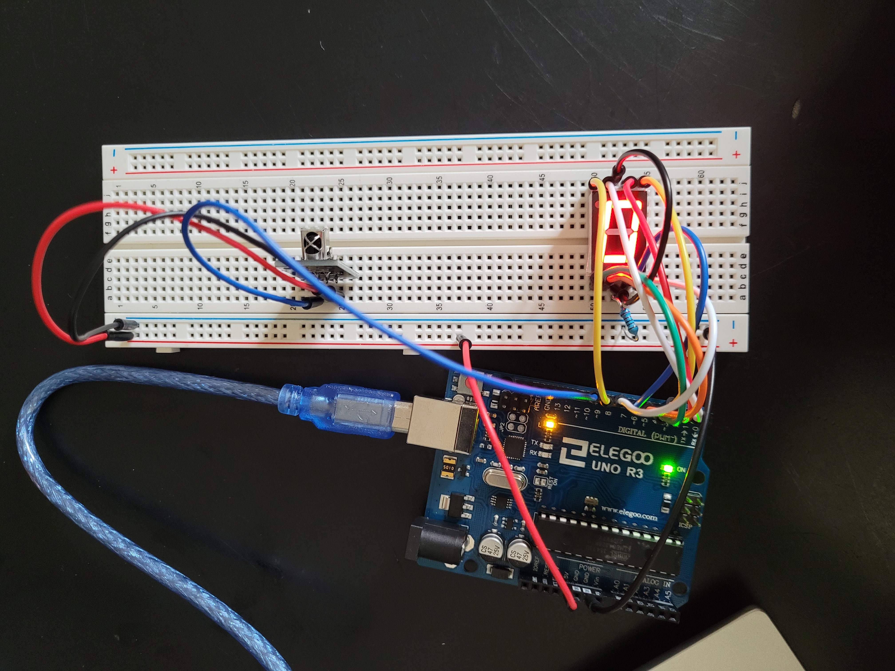
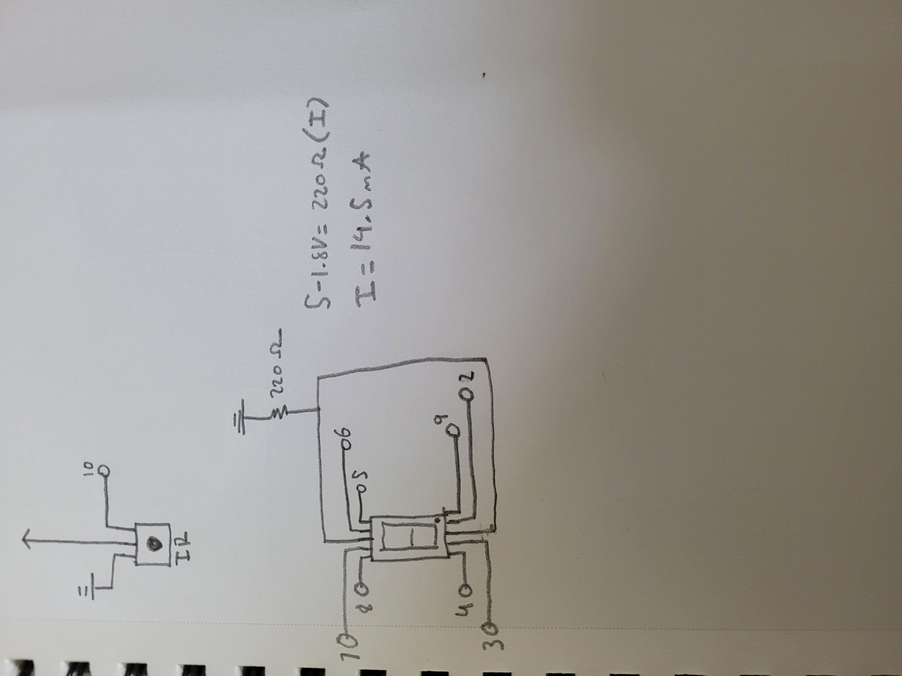

Shivank's Assignment 4!
For this assignment, I created a circuit that reads a signal from an Infrared remote and prints the digit to an seven segment display.

Image of the circuit.

Image of the schematic and calculations. I set the LED resistors to 220 Ohms to keep the mA within an acceptable of 1mA to 30mA according to the LED datasheet. The LEDs on the panel are all red, so I used a 1.8 voltage drop.
This is the code...
#include
#include "SevSeg.h" // add the SevSeg library: https://github.com/DeanIsMe/SevSeg
SevSeg sevseg; // define SevSeg object.
#define IR_RECEIVE_PIN 10 // define reciever pin
#define IR_BUTTON_1 12 // maps the signal being read to a button
#define IR_BUTTON_2 24 // maps the signal being read to a button
#define IR_BUTTON_3 94 // maps the signal being read to a button
#define IR_BUTTON_4 8 // maps the signal being read to a button
#define IR_BUTTON_5 28 // maps the signal being read to a button
#define IR_BUTTON_6 90 // maps the signal being read to a button
#define IR_BUTTON_7 66 // maps the signal being read to a button
#define IR_BUTTON_8 82 // maps the signal being read to a button
#define IR_BUTTON_9 74 // maps the signal being read to a button
void setup() {
byte numDigits = 1; // number of digits on the display
byte digitPins[] = {}; // empty for a single digit display, defines ground pins for a multi-digit display.
byte segmentPins[] = {6, 5, 2, 3, 4, 7, 8, 9}; // defines which arduino pins are connected to each segments. list is alphabetical and ends with DP
bool resistorsOnSegments = true; // set to true when the current limiting resistor is in series with the digit display. This is the case for my schematic.
byte hardwareConfig = COMMON_CATHODE; // common cathode or common anode, our case has a common cathode.
sevseg.begin(hardwareConfig, numDigits, digitPins, segmentPins, resistorsOnSegments); // initializes sevseg object using the parameters above.
sevseg.setBrightness(90); // set the brightness.
// ------ IR ---------- //
Serial.begin(9600); // starts Serial so we can read our results.
IrReceiver.begin(IR_RECEIVE_PIN); // initializes the IR pin.
}
void loop() {
if (IrReceiver.decode()) { // checks to see if we are receiving data
IrReceiver.resume(); // receive the next value
int command = IrReceiver.decodedIRData.command; // decodedIRData is the data structure that holds our information. .command reads the decoded command.
switch (command) { // reads the IR command and checks each case.
case IR_BUTTON_1: { // if the case matches with button 1...
Serial.println("Pressed on button 1"); // print out the button value on Serial.
sevseg.setNumber(1); // displays the number that matches with the case.
sevseg.refreshDisplay(); // required to continue to display the number after the void loop.
break;
}
case IR_BUTTON_2: { // if the case matches with button 2...
Serial.println("Pressed on button 2");// print out the button value on Serial.
sevseg.setNumber(2);// displays the number that matches with the case.
sevseg.refreshDisplay(); // required to continue to display the number after the void loop.
break;
}
case IR_BUTTON_3: { // if the case matches with button 3...
Serial.println("Pressed on button 3");// print out the button value on Serial.
sevseg.setNumber(3); // displays the number that matches with the case.
sevseg.refreshDisplay(); // required to continue to display the number after the void loop.
break;
}
case IR_BUTTON_4: { // if the case matches with button 4...
Serial.println("Pressed on button 4");// print out the button value on Serial.
sevseg.setNumber(4); // displays the number that matches with the case.
sevseg.refreshDisplay(); // required to continue to display the number after the void loop.
break;
}
case IR_BUTTON_5: { // if the case matches with button 5...
Serial.println("Pressed on button 5");// print out the button value on Serial.
sevseg.setNumber(5); // displays the number that matches with the case.
sevseg.refreshDisplay(); // required to continue to display the number after the void loop.
break;
}
case IR_BUTTON_6: { // if the case matches with button 6...
Serial.println("Pressed on button 6");// print out the button value on Serial.
sevseg.setNumber(6); // displays the number that matches with the case.
sevseg.refreshDisplay(); // required to continue to display the number after the void loop.
break;
}
case IR_BUTTON_7: { // if the case matches with button 7...
Serial.println("Pressed on button 7");// print out the button value on Serial.
sevseg.setNumber(7); // displays the number that matches with the case.
sevseg.refreshDisplay(); // required to continue to display the number after the void loop.
break;
}
case IR_BUTTON_8: { // if the case matches with button 8...
Serial.println("Pressed on button 8");// print out the button value on Serial.
sevseg.setNumber(8); // displays the number that matches with the case.
sevseg.refreshDisplay(); // required to continue to display the number after the void loop.
break;
}
case IR_BUTTON_9: { // if the case matches with button 9...
Serial.println("Pressed on button 9");// print out the button value on Serial.
sevseg.setNumber(9); // displays the number that matches with the case.
sevseg.refreshDisplay(); // required to continue to display the number after the void loop.
break;
}
default: { // if the case matches with unkown value...
Serial.println("Button not recognized"); // print out the button not recognized.
sevseg.setNumber(0); // displays zero
sevseg.refreshDisplay(); // required to continue to display the number after the void loop.
}
}
}
}
This is the circuit in practice!!